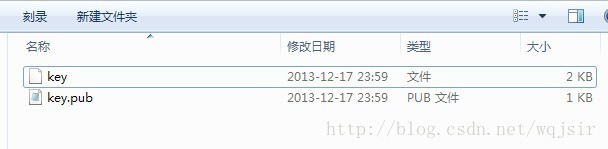

版本地址：root@120.24.81.100:/usr1/workfile/project.git
一、获取版本：
2、可选择安装TortoiseGit；（有类似于SVN的图形化界面）
3、生成密钥：
Git是分布式的代码管理工具，远程的代码管理是基于SSH的，所以要使用远程的Git则需要SSH的配置。
3.1、从开始菜单中找到Git 点击Git Bash 弹出命令行窗体，如下图：
3.2、键入命令：
$ ssh-keygen -t rsa -C “您的邮箱地址”
3.3、回车后，会叫输入密钥名字
这里输入：c:\\mykey\\key 其中key为密钥文件名
接着会叫输入密码，输入密码和确认密码后，我们的密钥就生成了。
此时我们在c:\\mykey目录下就可以看到我们刚生成的密钥了：

4、将3步中生成的key.pub发送给poppin3g@gmail.com，联系ranpop进行添加；
5、ranpop确认添加OK后，在本地通过git clone将版本同步到本地；
版本地址：root@120.24.81.100:/usr1/workfile/project.git
二、本地开发：
1、安装NODEJS；（采用windows版的msi安装文件）
2、安装express；(打开cmd，使用命令npm install express完成express的安装；)
3、安装mongodb；（采用windows版的msi安装文件）
安装完成后，打开cmd，先执行：
E:\derek\tools\MongoDB\Server\3.0\bin\mongod.exe --dbpath "E:\derek\Projects\wenlong_blog_nodejs\database" --logpath "E:\derek\Projects\wenlong_blog_nodejs\logs\init.log" --install --serviceName "mongo" --logappend --directoryperdb
其中程序路径和数据为路径以及日志路径由你自己设定，注意和实际的一致；
然后继续在命令行中执行：net start MongoDB回车，若出现服务器启动成功，则完成；
4、在项目根目录下进入命令行（shit+鼠标右键），在命令行中运行npm install，等待npm完成所有依赖的内部模块的布署；
5、在4中同样的命令行中运行node app.js，即可完成服务器的运行；
6、在浏览器中输入http://localhost:3000，若出现主页内容，说明本地环境搭建OK，若未出现内容，再针对具体情况进行排查；
三、修改上库：
在本地完成修改后，若要上库，采用以下步骤：
1、在项目根目录下右键，在弹出的菜单中选择“git bash”，在打开的命令行窗口中进行如下操作：
Git status //查看当前修改内容
Git add [要提交的文件列表]
Git commit //将要提交的文件列表先提交到内地，同时加上日志
Git push //将已经commit的内容推送到服务器仓库
2、完成提交后等待CI结果，CI构建和布署完成后会发送邮件通知到你设置的邮箱；